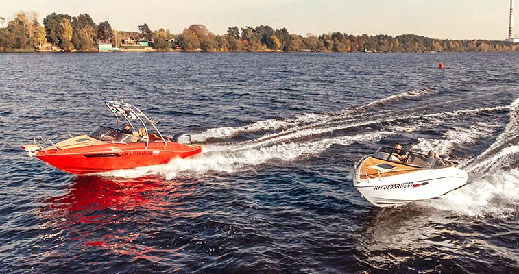
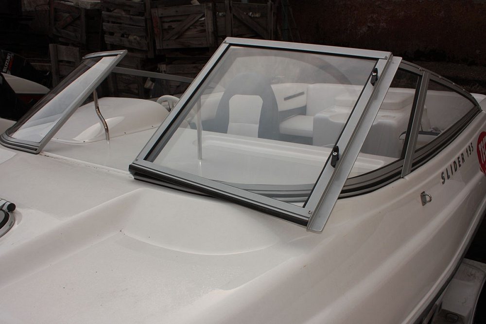
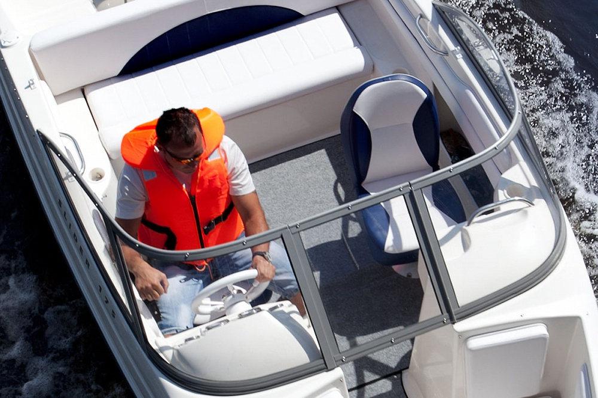
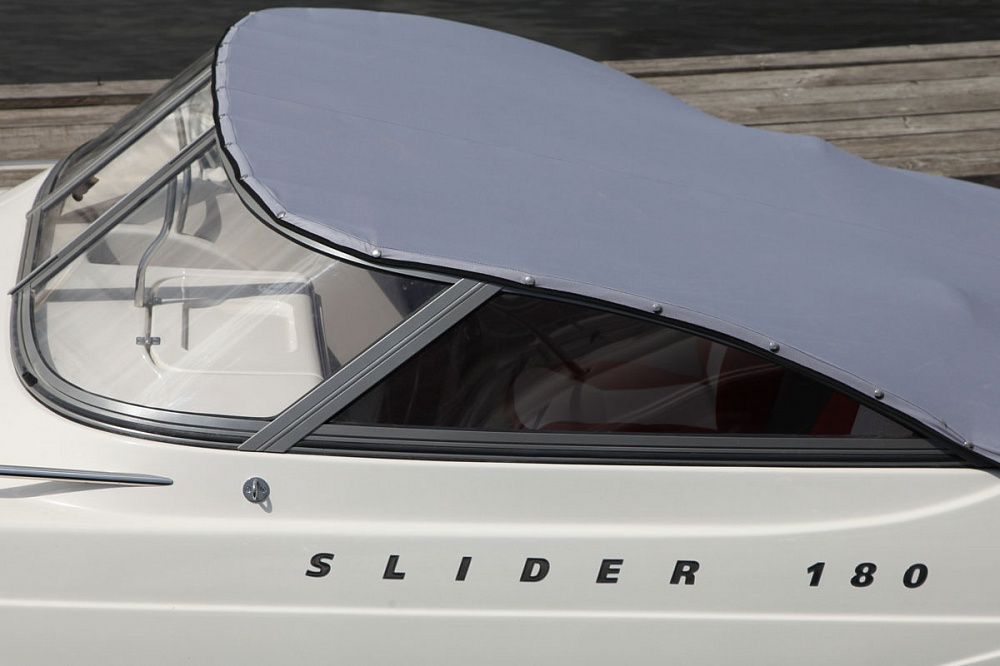
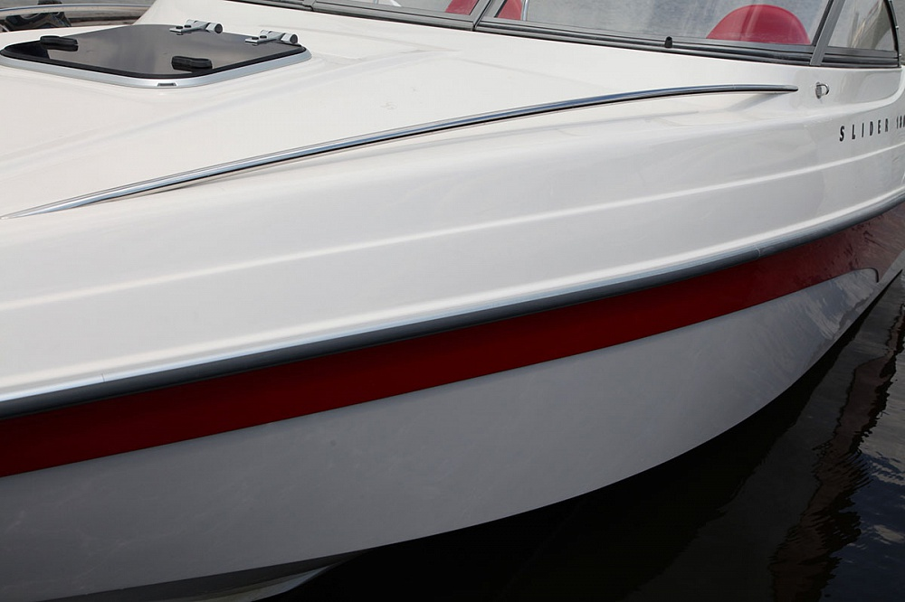
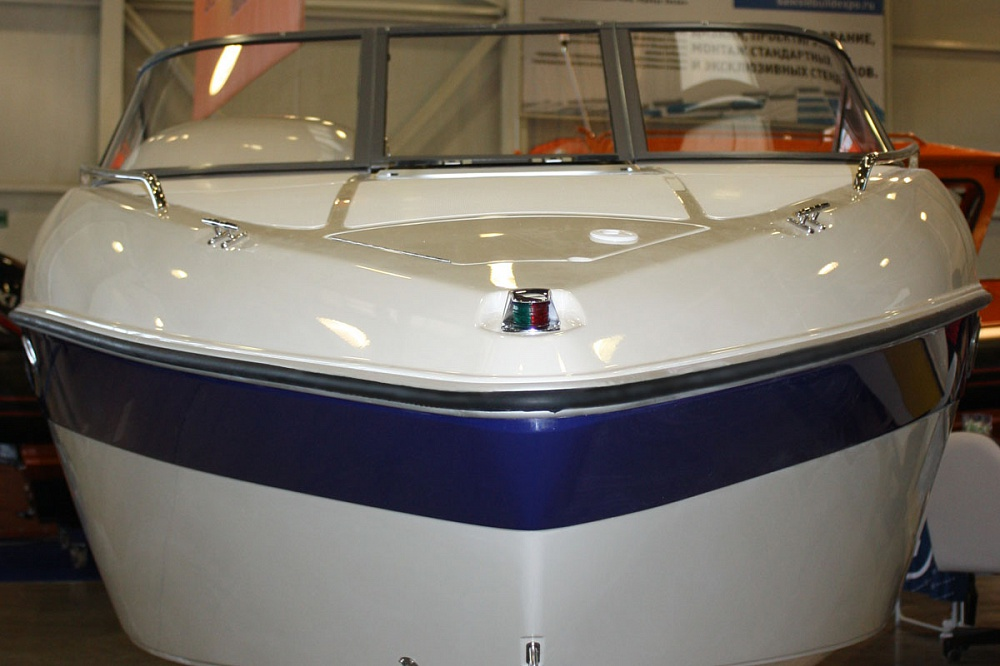
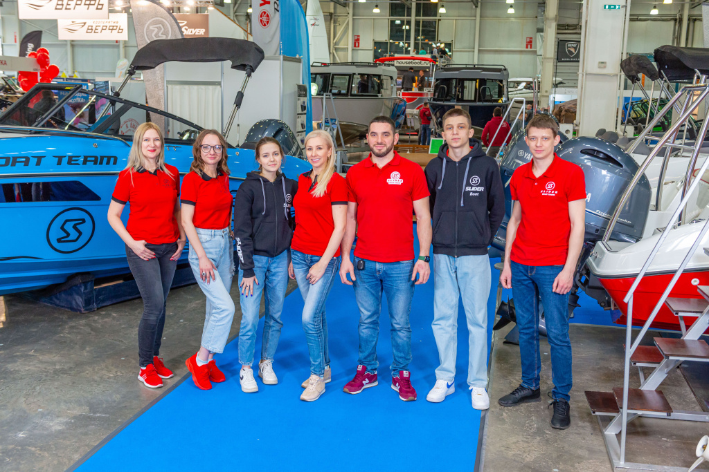

Стеклопластиковые катера SLIDER строят с 2003 года. Начинали в Казани, с 2019 года верфь работает в Конаково, Тверская область.

Здесь появились первые катера SLIDER.
Завод начал работу в Тверской области.
С сентября отдельные цеха формовки и сборки, ангар для сервиса и хранения, клиентская зона, катера ближе к воде для спуска и сдачи.
«Продукция «SLIDER» – это абсолютно оригинальные собственные разработки, учитывающие общемировые тенденции и опыт построения судов для активного отдыха, а так же особенности эксплуатации в российских условиях.»
Корпуса формуют послойно, для жёсткости и прочности в них есть шпангоутная секция и пенозаполнение. Палубы покрыты противоскользящим покрытием.

«Производство полного цикла, включая проектирование и изготовление всех комплектующих и мебели, позволяет катерам «SLIDER» быть прекрасно укомплектованными уже в базовой поставке с привлекательной, фиксированной ценой, единой на всей территории России.»
Часть комплектующих верфь продаёт отдельно: другим производителям маломерных судов и частным владельцам.



Алюминиевая рама с остеклением травмобезопасным небьющимся акриловым стеклом. Рама окрашена эпоксиполиэфирной краской (базовый цвет серый), снабжена открываемой центральной секцией с «задрайкой» и резиновым ограничителем. В комплекте – уплотнитель для установки рамы.
«Пожалуй это один из лучших отечественных образцов, которые до сих пор приходилось видеть»Из тестов экспертов журнала «Катера и Яхты»


Анодированный алюминиевый профиль со вставкой из квартопрена.
Длина хлыста 4 м.
